Day.4 Details
🏠 景點 | 地鐵3號線 安國站 123出口
北村韓屋村
開放中
⏰ 10:00~17:00(週日休息)
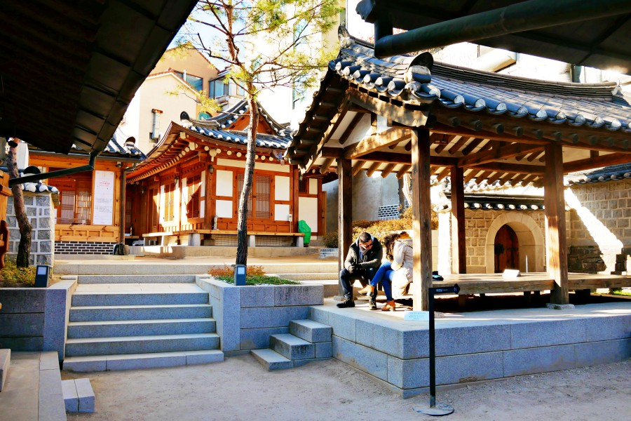
✨ 景點亮點：
- 朝鮮時代兩班貴族的傳統青瓦韓屋聚落，蜿蜒巷弄保留古風
- 經典「北村八景」展現古今交融景色，許多韓屋現仍有人居住
🍕 披薩店 | 地鐵3號線 安國站 3出口
Blacksmith's Woodfire Pizza
開放中
⏰ 11:30–15:00 17:00–21:00
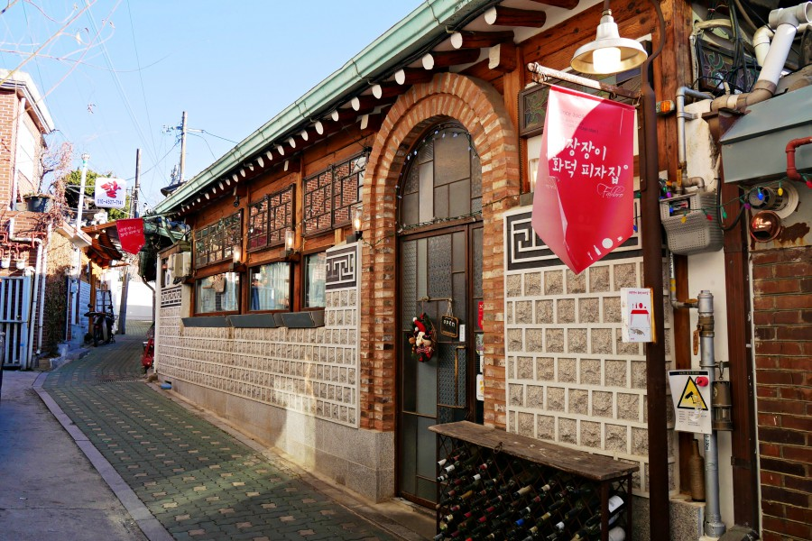
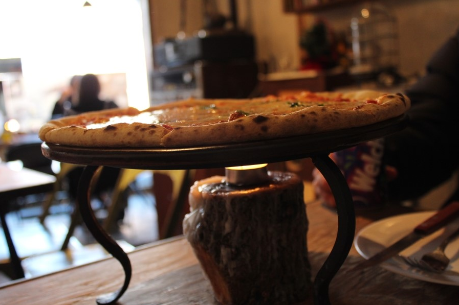
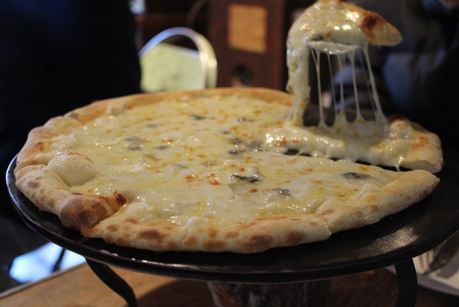
✨ 景點亮點：
- 內有自製的烤窯，師傅現場製作的義式披薩是這裡的王牌
- 每個座位桌上都有一個店家特別準備的小小爐架，披薩上桌後，會點燃酒精膏持續加熱保溫
🍵 喝茶 | 地鐵3號線 安國站 3出口
喝茶的院子
開放中
⏰ 11:00～22:30
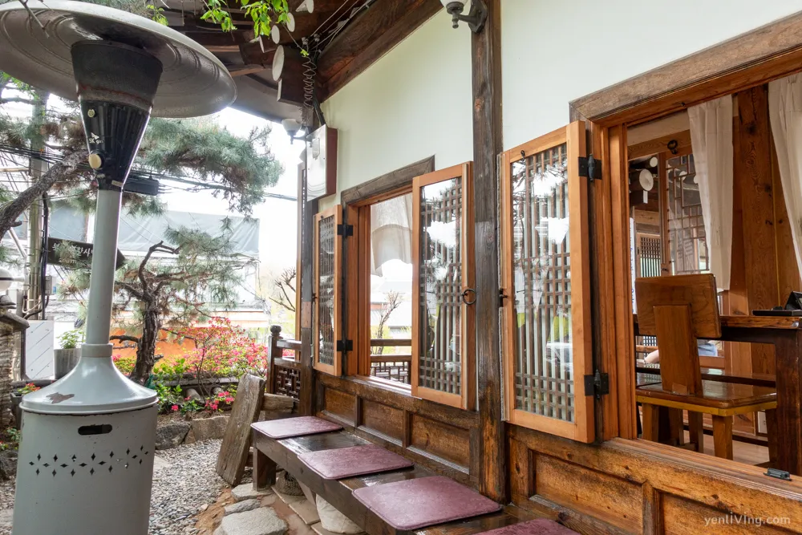
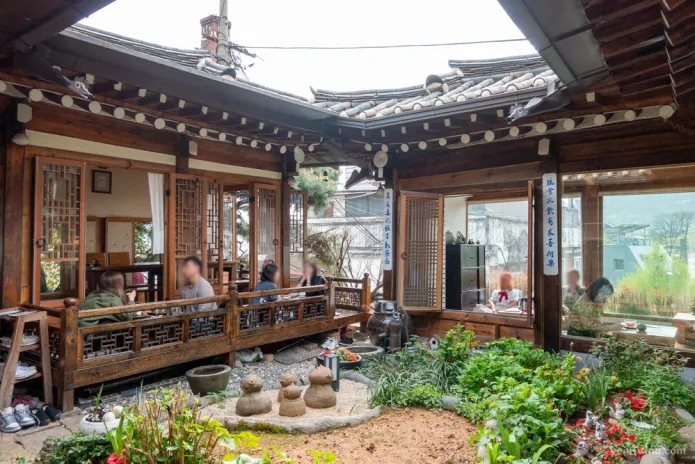
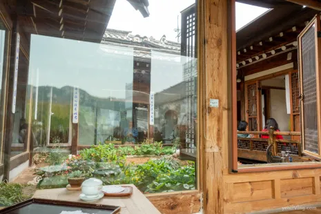
✨ 景點亮點：
- 保留木質傳統結構的韓屋中，設有精緻的景觀中庭，並透過大片落地窗將室內外風景融為一體
- 供顧客在席地而坐的環境下品嚐傳統韓式茶飲與特色甜點
🥯 貝果 | 地鐵3號線 安國站 3出口
安國站倫敦貝果
開放中
⏰ 08:00 - 18:00
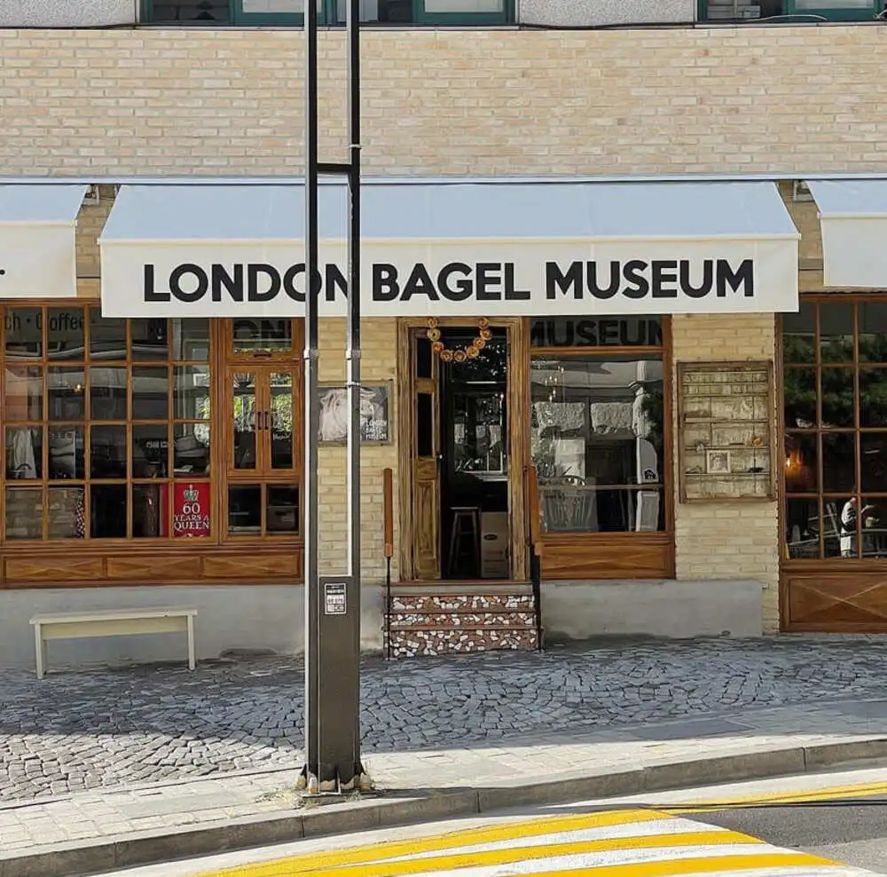
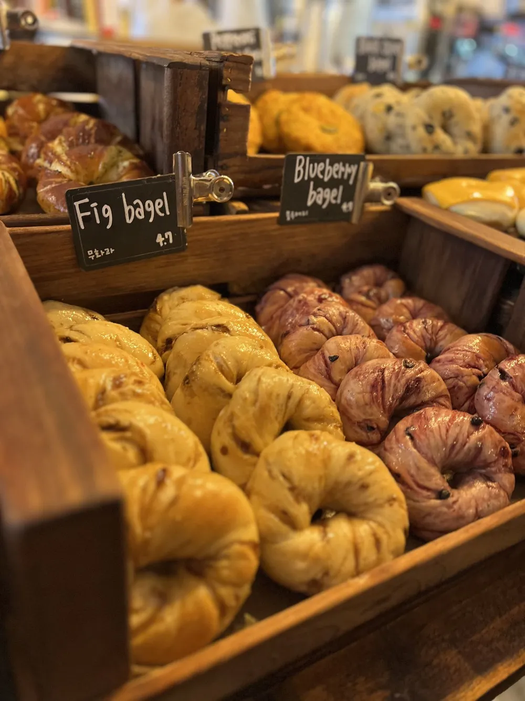
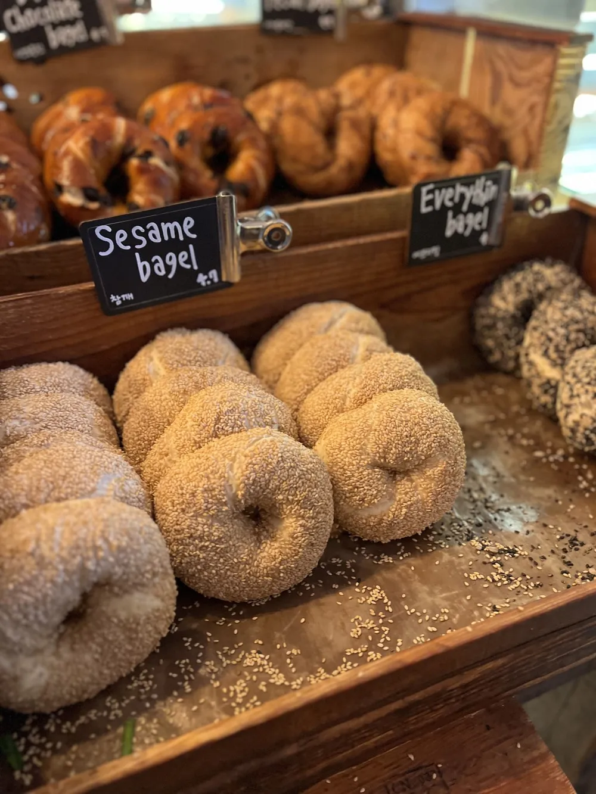
✨ 景點亮點：
- 建議一早前往或使用Catch Table APP進行線上候位
- 離北村韓屋村很近，可以順道遊覽
🏠 景點 | 地鐵3號線 安國站 3出口
昌德宮
開放中
⏰ 10:00~17:00(週日休息)
✨ 景點亮點：
- 是首爾五大宮殿之一，1997年被列為世界文化遺產
- 曾是《大長今》、《屍戰朝鮮》、《雲畫的月光》等多部著名韓劇的拍攝地
- 穿韓服免費：穿著韓服可享免費進入昌德宮（秘苑除外）。
- 秘苑預約： 想要參觀秘苑（後苑）必須透過昌德宮官網提早預約，現場購票名額有限。
- 避開週一： 昌德宮週一休息。
🍽️ 餐廳 | 地鐵3號線 安國站 1號出口
無垢屋(무구옥)
開放中
⏰ 11:30~21:00（15:00~17:30午休）
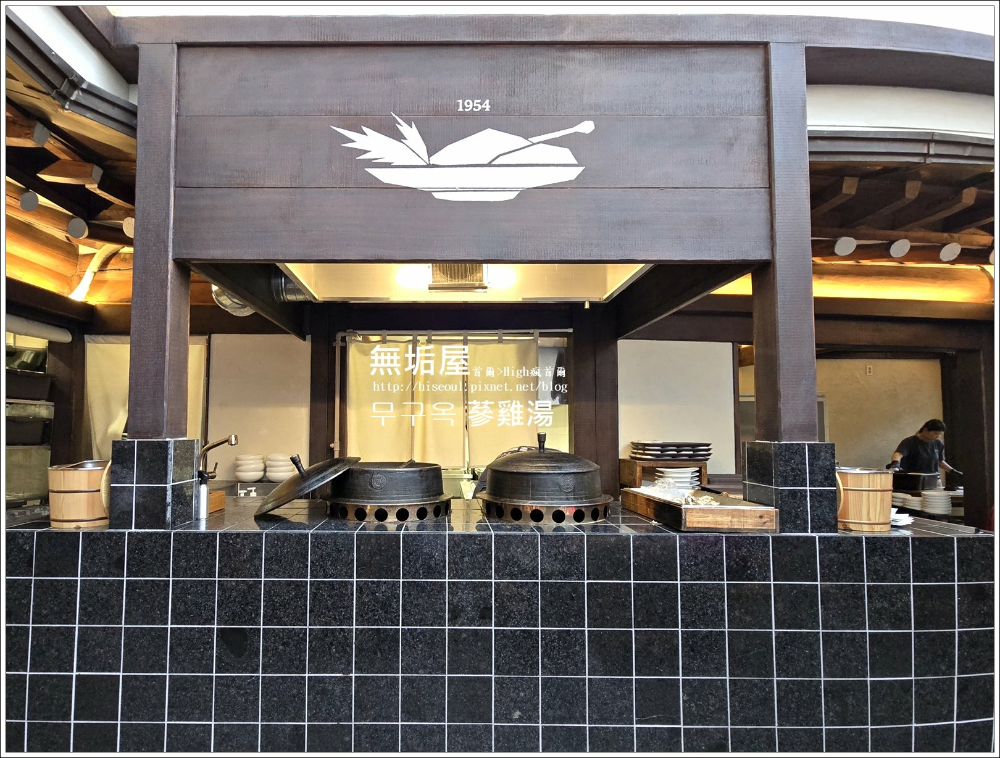
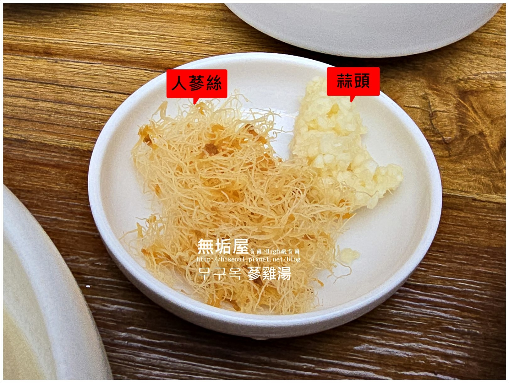
✨ 景點亮點：
- 也有聖水店(分店) 地鐵2號線「聖水站」2號出口附近
- 北韓式(平壤式)蔘雞湯」為特色
- 濃郁碳香湯頭